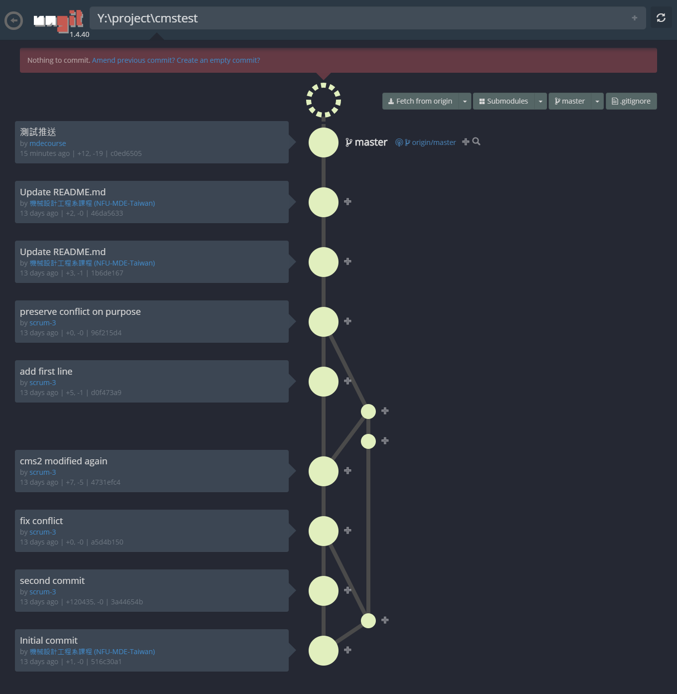

測試利用 IPv6 SSH config 代理主機改版
自行建立 Windows 10 環境下的 ANSI C 與 Python 3.7.2 程式環境
啟動與關閉 - 利用 subst 指令簡化 path 設定流程
ANSI C - 採用 http://download.savannah.gnu.org/releases/tinycc/
Python - Python 3.7.2 (原始安裝約 65 MB)
SciTE - https://www.scintilla.org/SciTE.html
Git - 採用 https://git-scm.com/ 可攜版本
Python 模組 - Flask, bs4, pyqt5, leo, pelican, lxml, markdown
Flask, bs4 and lxml is for CMSimfly
pyqt5 is for Leo Editor
pelican, and markdown is for Pelican Blog
安裝上述模組後, p37 容量約 420 MB
其他工具:
https://docs.microsoft.com/en-us/sysinternals./../downloads/process-explorer
https://docs.microsoft.com/en-us/sysinternals./../downloads/zoomit
https://devcenter.heroku.com/articles/heroku-cli
http://kdiff3.sourceforge.net/
http://www.coppeliarobotics.com/
https://sourceforge.net/projects/xming/
https://filezilla-project.org/
Git 教材: https://git-scm.com/book/zh-tw/v2
Github 教材: https://lab.github.com/ (已經以 scrum-1 帳號開始學習流程)
ungit 是一個網際 git 客戶端圖形化工具, 以 node.js 開發, 啟動時需要 git、node.js 與 npm. 將 ungit 製作成可攜系統, 必須下載 node.js 安裝後, 再安裝 ungit, 接著取下 c:\program files\nodejs 與 c:\users\用戶名稱\AppData\roaming\npm 及 npm-cache 放入 nodejs 中的 appdata 目錄, 並將整個 nodejs 目錄放入可攜 data 目錄, 並設定命令列搜尋路徑:
set path8=%Disk%:\nodejs;%Disk%:\nodejs\appdata\roaming\npm;
可攜系統即可透過指令進入 github 倉儲中, 以 ungit 進行圖形化操作.
此外, ungit 啟動程式碼中, 必須蓋掉擷取操作系統使用者的設定, 以便讓 ungit 導引 git 使用可攜系統 home 目錄中的 .gitconfig 設定.
#!/bin/sh
basedir=$(dirname "$(echo "$0" | sed -e 's,\\,/,g')")
# 必須關掉下列設定, 讓 ungit 可以導引 git 讀取 y:\home 下的 .gitconfig 設定
#case `uname` in
#*CYGWIN*) basedir=`cygpath -w "$basedir"`;;
#esac
if [ -x "$basedir/node" ]; then
"$basedir/node" "$basedir/node_modules/ungit/bin/ungit" "$@"
ret=$?
else
node "$basedir/node_modules/ungit/bin/ungit" "$@"
ret=$?
fi
exit $ret
利用 ungit 執行 cmstest 倉儲改版提交與推送畫面:

在實際操作 ungit 過程, 由於在 Windows 10 環境會啟動 Edge 瀏覽器, 若要在啟動 ungit 時使用 Google Chrome 瀏覽器 (或其他瀏覽器), 必須使用下列指令:
ungit --launchBrowser=0 --launchCommand "C:\PROGRA~2\Google\Chrome\Application\chrome.exe %U"
其中, PROGRA~2 為 "Program Files (x86)" 的縮寫 (註: PROGRA~1 為 "Program Files" 的縮寫), 且 %U 為 ungit 啟動時對應倉儲目錄的 URL 資料.
因此上述指令意指, 啟動 ungit 時, 不要使用內建設定的 Edge 瀏覽器, 而是執行隨後的指令, 而該指令即透過縮寫的目錄名稱, 對應 "C:\Program Files (x86)", 針對目前所在的倉儲目錄, 以 Google Chrome 瀏覽器開啟 ungit 的網際倉儲連結.
為了簡化上述指令的呼叫, 可以將上述指令改為:
ungit --launchBrowser=0 --launchCommand "C:\PROGRA~2\Google\Chrome\Application\chrome.exe %%U"
並以 SciTE 編輯器存入 Y:\kungit.bat 批次檔案中, 當使用者以命令列進入特定倉儲時, 只要輸入 kungit 即可呼叫此一 ungit 指令執行.
上述以批次檔案執行的 %%U, 表示要在 Windows command 中列出 %U, 因為 "%" 符號在批次檔案中具有特定意義, 因此要在批次檔案中列出 "%", 必須使用 "%%", 其他相關詳細說明, 請參考 https://ss64.com/nt/syntax-esc.html